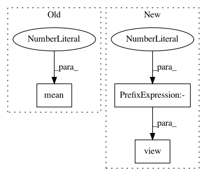

7f99fd7e1ea3f3a8b956232234b336ef410e6f91,function.py,,adaptive_instance_normalization,#,4
Before Change
style_mean = style_feat.mean(dim=2).view(N, C, 1, 1).expand(size)
content_feat_3d = content_feat.view(N, C, -1)
content_std = content_feat_3d.std(dim=2).view(N, C, 1, 1).expand(size)
content_mean = content_feat_3d.mean(dim=2).view(N, C, 1, 1).expand(size)
normalized_feat = (content_feat - content_mean) / content_std
return normalized_feat * style_std + style_mean
After Change
assert (size[:2] == style_feat.data.size()[:2])
style_std = style_feat.view(N, C, -1).std(dim=2).view(N, C, 1, 1)
style_mean = style_feat.view(N, C, -1).mean(dim=2).view(N, C, 1, 1)
content_std = content_feat.view(N, C, -1).std(dim=2).view(N, C, 1, 1)
content_mean = content_feat.view(N, C, -1).mean(dim=2).view(N, C, 1, 1)
normalized_feat = (content_feat - content_mean.expand(
In pattern: SUPERPATTERN
Frequency: 3
Non-data size: 3
Instances
Project Name: naoto0804/pytorch-AdaIN
Commit Name: 7f99fd7e1ea3f3a8b956232234b336ef410e6f91
Time: 2017-12-01
Author: inoue@hal.t.u-tokyo.ac.jp
File Name: function.py
Class Name:
Method Name: adaptive_instance_normalization
Project Name: Kaixhin/Rainbow
Commit Name: a4df4a6f648053e4ad05bbcfc06a87c6fa984e53
Time: 2018-02-15
Author: kaia@fb.com
File Name: model.py
Class Name: DQN
Method Name: forward
Project Name: DagnyT/hardnet
Commit Name: 24a5450e4ca094ae4edbda26f8f29ae012721779
Time: 2017-07-25
Author: ducha.aiki@gmail.com
File Name: Losses.py
Class Name:
Method Name: loss_HardNet